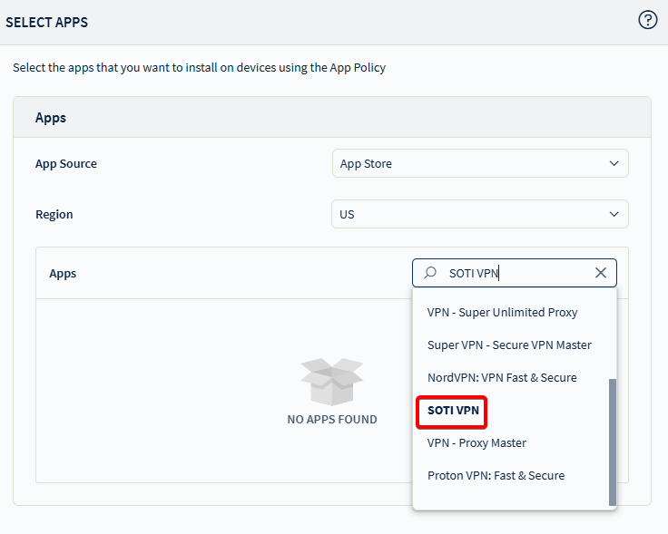
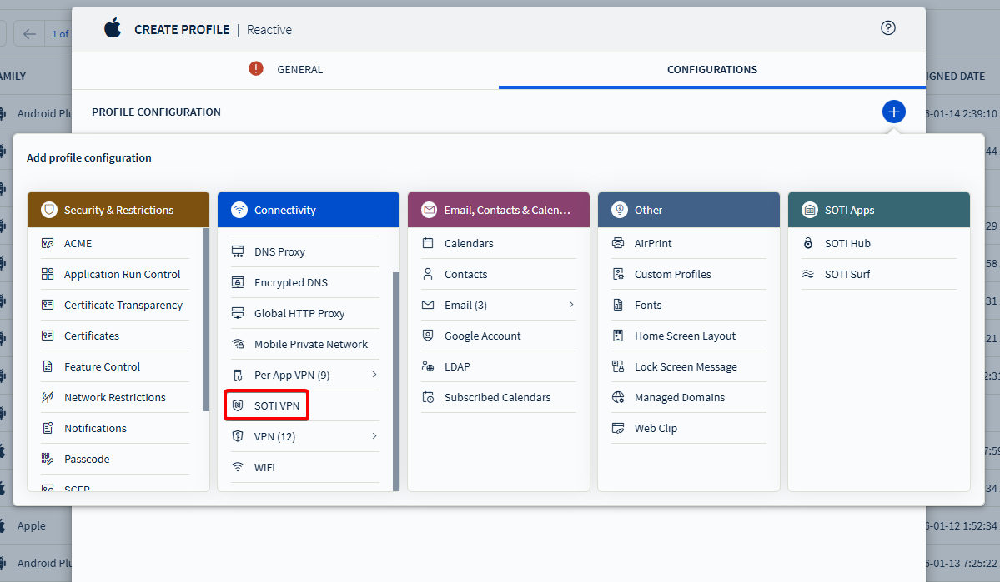
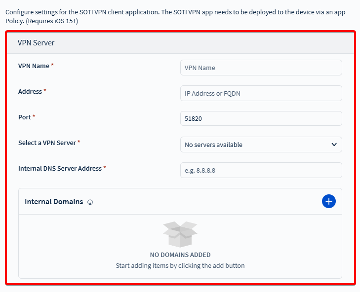
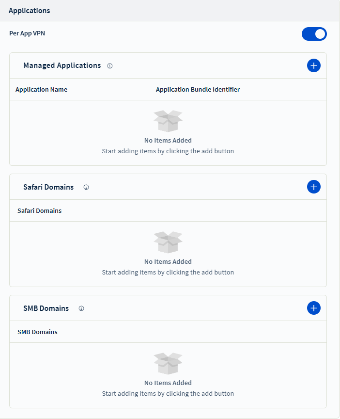
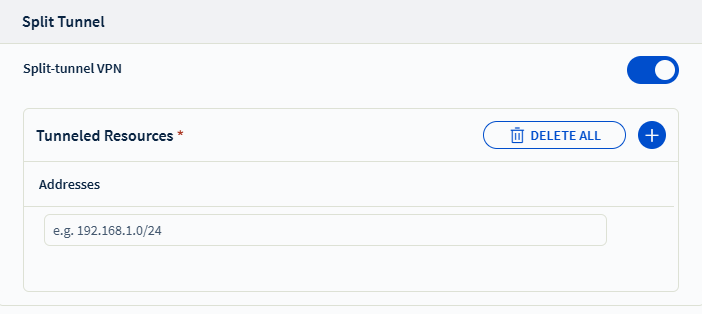
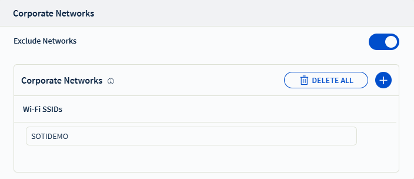

Configure SOTI VPN client settings for iOS/iPadOS devices
using the VPN profile payload to assign servers, manage network access, and enable features
such as split tunneling.
Use this task to configure the SOTI Virtual Private Network (VPN) client settings through the
SOTI MobiControlSOTI VPN iOS profile payload. You can use the profile payload
to assign VPN servers, disable VPN on corporate/internal networks, enable split tunnel,
and more.
Important: Selecting the wrong platform
causes your devices to not get targeted when assigning the
configuration.
Create an app policy to deploy the SOTI VPN client
application to your devices from the App Store.

After assigning the app policy, create or edit a Reactive
iOS profile and add the SOTI VPN payload.

VPN Server

In the VPN profile configuration screen, enter the following fields:
VPN Name: Enter a name to identify this VPN
account.
Address: Enter the external IP address or FQDN
of the VPN server.
Port: Enter the port number for VPN
connections.
Note: The default is 51820. Valid range:
1–65535.
Select a VPN Server: Choose a server from the
enrolled list.
DNS Server Address: Enter the IP address of the
DNS server used to resolve internal resources.
Note: If none is specified, you can use a public
DNS like 8.8.8.8 (Google) or 1.1.1.1 (Cloudflare).
Internal Domains: Specify the domains to be
routed through the VPN tunnel.
Note: Other domains use the device’s default DNS
unless a split-tunnel rule applies.
Applications

Select Per App VPN to define how SOTI VPN traffic is applied on the device. Choose one or
more options based on which applications or network resources require SOTI VPN access.
Managed Applications: Route SOTI VPN traffic only for administrator-managed
applications installed on the device.
Safari Domains: Apply SOTI VPN access only when users browse specified domains in Safari.
SMB Domains: Secure access to defined SMB network
domains over SOTI VPN.
Split Tunnel

Enable Split-tunnel VPN if you want to restrict VPN
traffic to specific resources.
Note: Only the IP ranges specified in CIDR notation (e.g.,
192.168.1.0/24) use the VPN connection.
Add Tunneled Resources IP ranges to be routed
through the split-tunnel VPN.
Corporate Networks

Enable Exclude Networks to automatically disable VPN on
specified networks.
Note: Use this option to turn off the VPN connection when the device joins
trusted Wi-Fi networks, such as your corporate SSID. This helps conserve
bandwidth and avoid network policy conflicts.
Save the profile and assign it to the appropriate iOS device groups.
Your devices receive the SOTI
VPN application with the configuration applied from the profile.